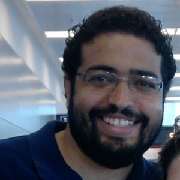

At University of Miami
MTH 162 55. Calculus 2.
2011
MTH 161 11. Calculus 1.
MTH 107 B. Precalculus 1.
2010
MTH 161 DN. Calculus 1.
MTH 112. Calculus 2. (Tutoring session)
Fall 2009
MTH 110.Calculus 1. (Lab)
Research Interests
Algebraic and Topological Combinatorics.Upcoming events and activities
October 25-26, 2014. Special Session on Topological Combinatorics and Combinatorial Commutative Algebra. AMS Sectional Meeting. SFSU, San Francisco, CA, USA.
November 10-14, 2014. IMA Annual Program Year Workshop Geometric and Enumerative Combinatorics. IMA University of Minnesota. Minneapolis, MN, USA.
November 24, 2014. Applied Algebra Seminar. York University. Toronto, Canada.
January 6-9, 2015. Conference in honor of Michelle Wachs. University of Miami. Miami, FL, USA.
March 14-15, 2015. Special Session on Algebraic Combinatorics. AMS Sectional Meeting. Michigan State University in East Lansing, MI, USA.
May 13, 2015. Combinatorics Seminar. University of Washington. Seattle, WA, USA.
Preprints and Publications
-
R. S. González D'León. On the free Lie algebra with multiple brackets.
ArXiv:1408.5415
-
R. S. González D'León, M. L. Wachs. On the (co)homology of the poset of weighted partitions.
ArXiv:1309.5527. Accepted for publication in Trans. Amer. Math. Soc.
-
R. S. González D'León, M. L. Wachs. On the poset of weighted partitions.
DMTCS Proceedings 01 (2013): 1029-1040.
-
R. S. González D'León. A family of symmetric functions associated with Stirling permutations (in preparation).
-
P. Brändén, R. S. González D'León. On the half-plane property and the Tutte-group of a matroid.
J. Combin. Theory Ser. B. 100 - 2010 ArXiv: 0906.1071 MATLAB code
-
R. S. González D'León. Ph.D. Thesis: On the combinatorics of the free Lie algebra with multiple brackets.
Advisor: Michelle Wachs.
University of Miami, June 2014. Download
-
R. S. González D'León. Master Thesis: Representing matroids by polynomials with the half-plane property.
Advisor: P. Brändén.
Kungliga Tekniska Högskolan, May 2009. PDF MATLAB code
Talks
Selected Talks
The combinatorial structure behind the free Lie algebra. July 12, 2014. Cuarto Encuentro Colombiano de Combinatoria ECCO2014. Universidad de los Andes, Bogotá, Colombia.
On the free Lie algebra with k compatible brackets and poset topology. October 19, 2013. Special Session on Topological Combinatorics. AMS Sectional Meeting. Washington University, St. Louis, MO, USA.
(Poster) On the poset of weighted partitions. June 24, 2013. FPSAC'13 The 25th International Conference on Formal Power Series and Algebraic Combinatorics. Paris, France.
On the poset of weighted partitions. June 17, 2013. The 11th Nordic Combinatorial Conference (NORCOM). KTH, Stockholm, Sweden.
On the (co)homology of the poset of weighted partitions. October 14, 2012. Special Session on Algebraic and Topological Combinatorics. AMS Sectional Meeting. Tulane University, New Orleans, LA, USA.
Representing matroids by polynomials with the half-plane property. May 27, 2009. Combinatorics seminar. KTH-The Royal Institute of Technology, Stockholm, Sweden.
Academic Employment
Postdoctoral Scholar, August 2014- Present. University of Kentucky, USA.
Research Assistant (Supported by NSF Grant DMS 1202755), June 2012- July 2014. University of Miami, USA.
Teaching Assistant, August 2009- May 2012. University of Miami, USA.
Education
Ph.D. in Mathematics, August 2014. University of Miami, USA.
M.Sc. in Mathematics, May 2011. University of Miami, USA.
M.Sc. in Mathematics, June 2009. KTH - Royal Institute of Technology, Stockholm, Sweden.
Electrical Engineering, March 2006. UPB University, Medellín, Antioquia, Colombia
Full Curriculum Vitae
Rafael S. González D'león
Postdoctoral Scholar
Department of Mathematics
University of Kentucky
Address
Patterson Office Tower, Room 767Lexington KY 40506-0027
Email: rafaeldleon at uky.edu
Phone: 859-257-4802
Links to databases of Mathematical objects
The On-Line Encyclopedia of Integer Sequences
Gabriele Nebe and Neil Sloane's Catalogue of Lattices
ATLAS of Finite Group Representations
NIST Digital Library of Mathematical Functions
A Database of Graphs in Combinatorica Format
Combinatorial Catalogues of G.F. Royle
Combinatorial Software and Databases
Links to repositories with mathematical knowledge
Links to databases of open problems in Mathematics
This is a personal homepage. Opinions expressed here or implied by links provided, do not represent the official views of University of Kentucky.